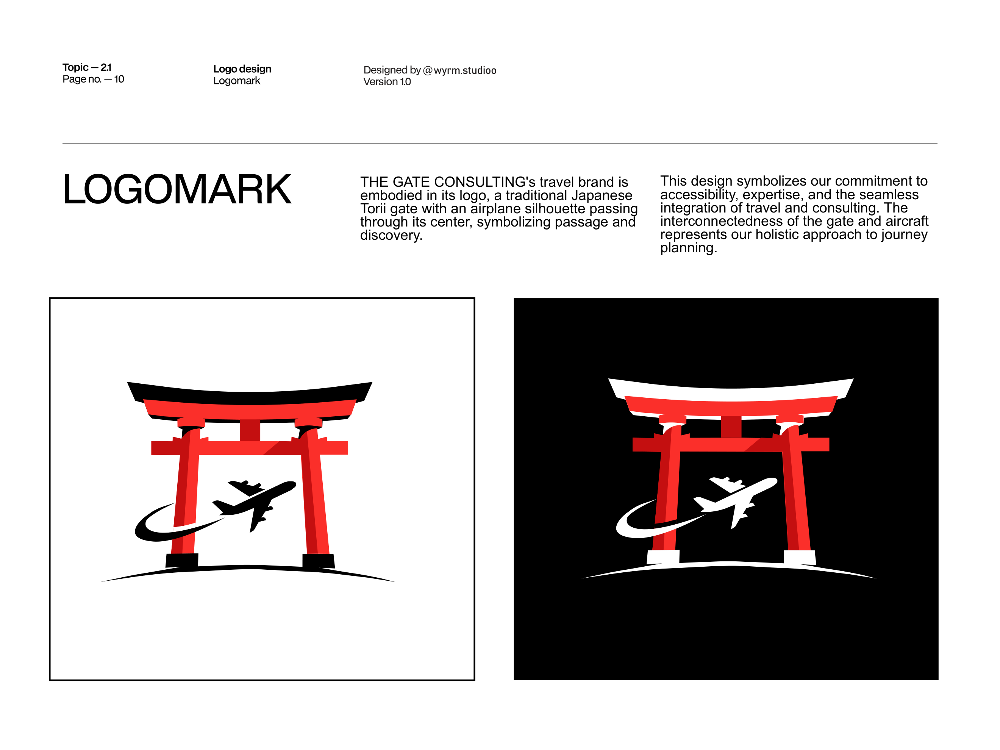
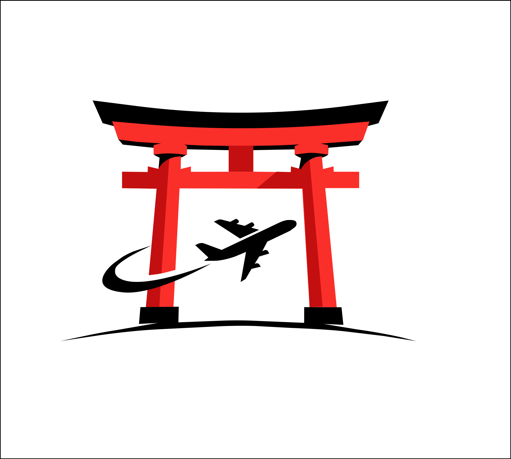
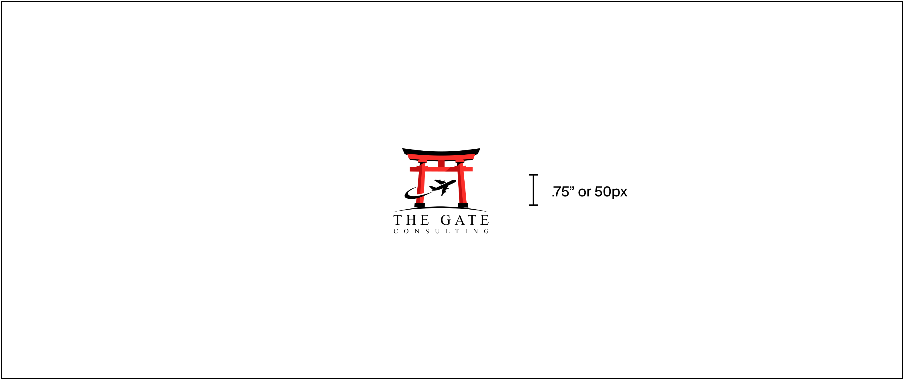
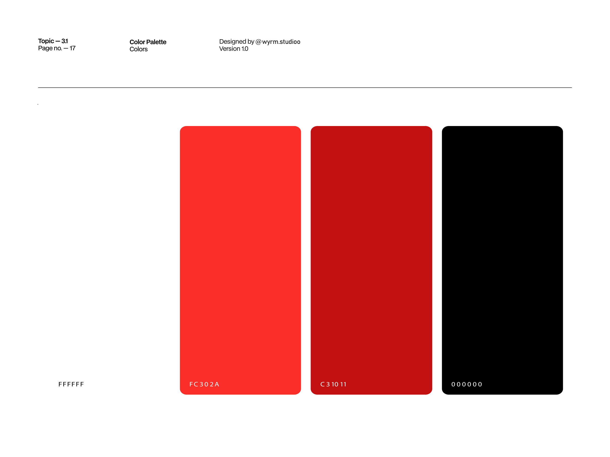
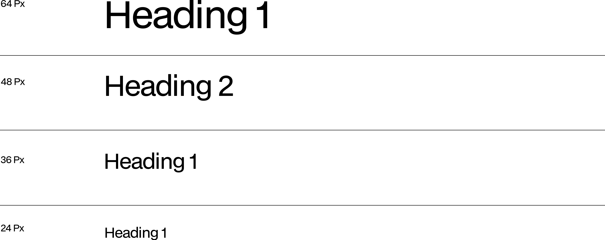
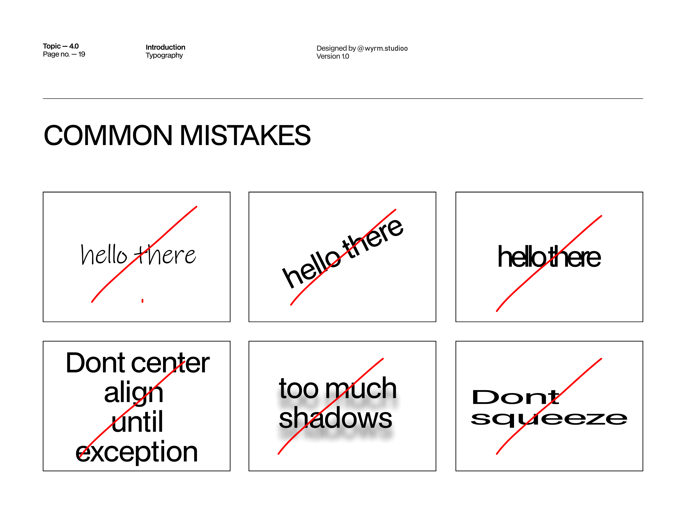
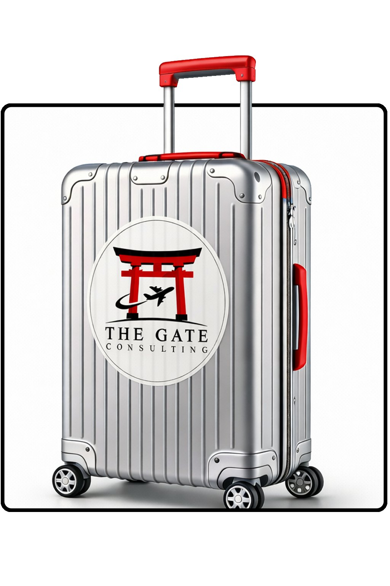

Travel Consultancy · Brand Identity
THE GATE — Passage to Asia
A Tunisian travel consultancy for culturally immersive Asian journeys — a Torii gate with an airplane passing through it, a vermilion palette with the weight of tradition, and a complete identity system built from strategy to stationery: passage and discovery.
CLIENT
THE GATE CONSULTING
SERVICES
Identity • Guidelines • Collateral
DURATION
2025
INDUSTRY
Travel & Tourism
"Passage and discovery."
THE GATE CONSULTING — TUNISIA → ASIA • EXPERT-PLANNED • CULTURALLY IMMERSIVE
The story
A gate, not an agency
THE GATE CONSULTING is a Tunisian travel consultancy that specializes in personalized, expert-planned, and culturally immersive Asian travel experiences — connecting travelers from all over Tunisia to the world through accessible online planning and insider expertise.
Their aim: deliver innovative, bespoke travel consulting solutions that exceed client expectations and embrace Asia's rich heritage. Their vision: to be a trailblazing force in accessible, digital, and culturally immersive travel consulting.
The name says it before the logo can. A gate is not a desk — it's the moment a journey begins. THE GATE positions the brand as the passage itself: expert on this side, adventure on the other.
What they stand for
Four pillars, straight from the brand
道
Nationwide reach
Digital-first consultation and remote planning serving travelers across all of Tunisia — not just locally.
心
Cultural authenticity
Lived experience and local knowledge paying homage to Asia's heritage — authentic insights and hidden gems only insiders know.
新
Innovation
Bespoke itineraries that challenge traditional agencies and captivate the spirit of adventure.
精
Precision
Meticulous planning details and transparent pricing — the highest standards of quality and expert guidance.
Brand guidelines
The identity system, up close
No PDFs, no downloads — the whole system lives right here on the page: the logo and its story, the vermilion palette, the logotype, and the stationery system.

The symbol
One letter of passage
The travel brand embodied in a single mark: a traditional Japanese Torii gate with an airplane silhouette passing through its center. The interconnectedness of gate and aircraft represents a holistic approach to journey planning — accessibility, expertise, and seamless integration of travel and consulting.



Vermilion for the gate, crimson for its shadow. Click any chip to copy its hex.
Typography
A logotype with authority
Times New Roman, chosen as the logotype, captures the brand's essence with its classic and authoritative design — elegant serifs and timeless proportions that reflect THE GATE's commitment to tradition and expertise, with high legibility across digital platforms and travel materials.
Aa
TIMES NEW ROMAN — LOGOTYPE
THE GATE
CONSULTING
THE LOCKUP — TWO LINES, ONE PASSAGE
Applications
The brand on paper
The logo lives on the primary grid line, centered for prominence — top or bottom corners when space is tight. Invoice, date, and web address all follow the system.



The Challenge
Travel is the most clichéd category in design — planes, globes and sunset gradients everywhere. THE GATE needed to feel unmistakably Asian and unmistakably Tunisian at once, expert without being cold, and digital-first without losing the ceremony of beginning a journey. One brand, two worlds, zero clichés.
The Solution
A symbol that does the storytelling alone: a Torii gate — the threshold of passage — with an airplane through its center. Vermilion and crimson borrowed from shrine architecture, Times New Roman for timeless authority, a complete clearspace and lockup system, and stationery that turns an invoice into a boarding pass for the imagination.
Deliverables
Brand Identity
- —Torii + airplane logomark
- —Two-ground logo system
- —Vermilion & crimson palette
- —Times New Roman logotype
Guidelines & System
- —Complete brand guidelines document
- —Clearspace & 30 pt sizing rules
- —Grid placement system
- —Voice & tone definition
Collateral
- —Invoice stationery layouts
- —Cover system, light & dark
- —Moodboard & art direction
- —Web-ready asset exports
Approach
Strategy
Warm, assured, expert. The tone ignites wanderlust while establishing trusted authority with lived experience in the region — every visual decision reinforcing that THE GATE is not an agency you hire, but a passage you walk through.
Credits
Roles
OUTCOME
A brand that opens doors — from Tunisia to Asia.
A complete identity system running from the symbol to the stationery: logomark, two-ground lockups, vermilion palette, typographic voice, placement rules and collateral. Strategy, design and guidelines combined into memorable brand experiences — concept to execution, one studio.
Your brand next
Got a journey worth branding?
Whether you're a consultancy, a label or a creator — we build identities from concept to execution, all under one roof.
Next Case Study